소방설비기사(전기분야) (2009-08-30 기출문제)
1과목: 소방원론
1. 다음 중 자연발화가 일어나기 쉬운 조건이 아닌 것은?
- 열전도율이 클 것
- 적당량의 수분이 존재할 것
- 주위의 온도가 높을 것
- 포면적이 넓을 것
(정답률: 84%)

2. 다음 중 제2류 위험물에 해당하는 것은?
- 유황
- 질산칼륨
- 칼륨
- 톨루엔
(정답률: 79%)
3. 다음 중 알킬알루미늄 화재시 가장 적합한 소화방법은?
- 물을 주수하여 냉각소화한다.
- 이산화탄소를 방사하여 질식소화한다.
- 팽창질석으로 질식소화한다.
- 할로겐화합물 약제를 사용하여 억제소화한다.
(정답률: 78%)
4. 내화건축물과 비교한 목조건축물 화재의 일반적인 특징을 옳게 나타낸 것은?
- 고온, 단시간형
- 저온, 단시간형
- 고온, 장시간형
- 저온, 장시간형
(정답률: 86%)
5. 화재시에 발생하는 연소생성물을 크게 4가지로 분류할 수 있다. 이에 해당되지 않는 것은?
- 연기
- 화염
- 열
- 산소
(정답률: 74%)
6. 다음 중 연소와 가장 관계 깊은 화학반응은?
- 중화반응
- 치환반응
- 환원반응
- 산화반응
(정답률: 85%)
7. 가연성가스이면서도 독성가스인 것은?
- 질소
- 수소
- 메탄
- 황화수소
(정답률: 67%)
8. 공기의 요동이 심하면 불꽃이 노즐에 정착하지 못하고 떨어지게 되어 꺼지는 현상을 무엇이라 하는가?
- 역화
- 블로우 오프
- 불완전 연소
- 플래쉬 오버
(정답률: 71%)
9. 다음 중 인화성 액체의 화재에 해당되는 것은?
- A급 화재
- B급 화재
- C급 화재
- D급 화재
(정답률: 80%)
10. 그림에 표현된 불꽃연소의 기본요소 중 ( )안에 해당되는 것은?
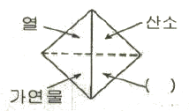
- 열분해 증발고체
- 기체
- 순조로운 연쇄반응
- 풍속
(정답률: 76%)
11. 다음 물질 중 공기 중에서의 연소범위가 가장 넓은 것은?
- 부탄
- 프로판
- 메탄
- 수소
(정답률: 74%)
12. 화재의 소화원리에 따른 소화방법의 적용이 잘못된 것은?
- 냉각소화 : 스프링클러설비
- 질식소화 : 이산화탄소소화설비
- 제거소화 : 포소화설비
- 억제소화 : 할로겐화합물소화설비
(정답률: 82%)
13. 물질의 증기비중을 옳게 나타낸 것은? (단, 수식에서 분자, 분모의 단위는 모두 g/mol 이다.)
- 분자량/22.4
- 분자량/29
- 분자량/44.8
- 분자량/100
(정답률: 81%)
14. 인화점이 20℃ 인 액체위험물을 보관하는 창고의 인화위험성에 대한 설명 중 옳은 것은?
- 여름철에 창고 안이 더워질수록 인화의 위험성이 커진다.
- 겨울철에 창고 안이 추워질수록 인화의 위험성이 커진다.
- 20℃에서 가장 안전하고 20℃ 보다 높아지거나 낮아질수록 인화의 위험성이 커진다.
- 인화의 위험성은 계절의 온도와는 상관없다.
(정답률: 80%)
15. 피난계획의 일반원칙 중 fool proof 원칙이랑 무엇인가?
- 한가지가 고장이 나도 다른 수단을 이용하는 원칙
- 두 방향의 피난동선을 항상 확보하는 원칙
- 피난수단을 이동식 시설로 하는 원칙
- 피난수단을 조작이 간편한 원시적 방법으로 하는 원칙
(정답률: 78%)
16. 다음 중 고체 가연물이 덩어리보다 가루일 때 연소되기 쉬운 이유로 가장 적합한 것은?
- 발열량이 작아지기 때문이다.
- 공기와 접촉면이 커지기 때문이다.
- 열전도율이 커지기 때문이다.
- 활성에너지가 커지기 때문이다.
(정답률: 80%)
17. 물의 소화력을 보강하기 위해 첨가하는 약제로서 물의 표면장력을 낮추어 침투효과를 높이기 위한 첨가제는?
- 증점제
- 강화액
- 침투제
- 유화제
(정답률: 61%)
18. 물은 100℃에서 기화될 때 체적이 증가하는데 다음 중 이로 인해 기대 할 수 있는 가장 큰 소화효과는?
- 타격효과
- 촉매효과
- 제거효과
- 질식효과
(정답률: 67%)
19. 정전기에 의한 발화를 방지하기 위한 예방대책을 옳지 않은 것은?
- 접지시설을 한다.
- 습도를 일정수준 이상으로 유지한다.
- 공기를 이온화한다.
- 부도체 물질을 사용한다.
(정답률: 71%)
20. 철근콘크리트조로서 내화구조 벽의 기준은 두께 몇 cm 이상이어야 하는가?
- 10
- 15
- 20
- 25
(정답률: 74%)
2과목: 소방전기회로
21. 어떤 코일에 직류전압 30V를 가하면 450W를 소비하고 교류전압 250V를 가하면 7500W를 소비 한다고 한다. 이 코일의 리액턴스는 약 몇 [Ω]인가?
- 1.2[Ω]
- 2.4[Ω]
- 3.6[Ω]
- 4.8[Ω]
(정답률: 38%)
22. 0℃ 때의 저항이 10Ω, 저항온도계수가 0.0043인 전선이 잇다. 30℃에서 이 전선의 저항은 약 몇 [Ω]인가?
- 0.013[Ω]
- 0.68[Ω]
- 1.4[Ω]
- 11.3[Ω]
(정답률: 44%)
23. 기전력 1.5V, 내부저항 0.1Ω인 전지 10개를 직렬로 연결하고 2Ω의 저항을 가진 전구에 연결할 때 전구에 흐르는 전류는 몇 [A]인가?
- 0.5[A]
- 5[A]
- 7.5[A]
- 10[A]
(정답률: 42%)
24. 다음 중 절연저항 시험에서 “대지전압이 150V이하의 경우 0.1MΩ 이상” 이란 뜻으로 가장 알맞은 것은?
- 누설전류가 1.5㎃ 이하이다.
- 누설전류가 0.15㎃ 이하이다.
- 누설전류가 15㎃ 이상이다.
- 누설전류가 0.15㎃ 이상이다.
(정답률: 57%)
25. “전자유도에 의하여 발생하는 기전력은 자속 변화를 방해하는 방향으로 전류가 발생한다.” 라는 법칙은?
- 렌쯔의 법칙
- 노이만의 법칙
- 패러데이의법칙
- 헨리의 법칙
(정답률: 63%)
26. 두 벡터 A1=3+j2, A2=2+j3 가 있다. A=A1×A2 라고 할 때 A는?
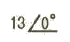
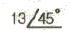
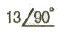
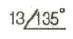
(정답률: 59%)
27. 역률 80%, 유효전력 80kW일 때 무효전력은?
- 10[kVar]
- 16[kVar]
- 60[kVar]
- 64[kVar]
(정답률: 58%)
28. 다음 중 온도를 전압으로 변화시키는 요소로 가장 알맞은 것은?
- 광전지
- 열전대
- 측온저항체
- 차동변압기
(정답률: 66%)
29. 그림과 같은 DIODE 게이트 회로에서 출력전압은? (단, 다이오드내의 전압강하는 무시한다.)
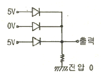
- 0V
- 1V
- 5V
- 10V
(정답률: 83%)
30. 다음 그림과 같은 회로의 전달함수는?
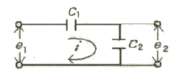
- C1+C2
- C2
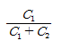
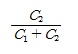
(정답률: 58%)
31. 100V로 500W의 전력을 소비하는 전열기가 있다. 이 전열기로 80V로 사용하면 소비전력은?
- 320[W]
- 360[W]
- 400[W]
- 440[W]
(정답률: 43%)
32. 다음 중 계전기 접점의 불꽃을 소거할 목적으로 사용하는 것은?
- 바리스터
- 서미스터
- 버랙터다이오드
- 터널다이오드
(정답률: 63%)
33. 제연용으로 사용되는 3상유도전동기를 Y-△기동방식으로 하는 경우, 기동용 회로에 사용되는 것과 거리가 먼 것은?
- 타이머
- 영상변류기
- 전자접촉기
- 열동계전기
(정답률: 66%)
34. 같은 철심 위에 동일한 권수로 자기인덕턴스 L[H]의 코일 2개를 접근해서 같은 장향으로 감고, 이것을 직렬로 접속했을 때 합성인덕턴스는? (단. 결합계수는 0.5라고 한다.)
- 2L(H)
- 3L(H)
- 4L(H)
- 5L(H)
(정답률: 43%)
35. 논리식
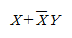
를 간단히 하면?- XㆍY
- X+Y
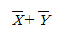
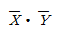
(정답률: 71%)
36. 정전용량이 1μF의 콘덴서 3개가 있다. 1.5μF의 콘덴서 대신으로 사용하려면 어떻게 접속하면 되는가?
- 3개를 직렬로 접속한다.
- 3개를 병렬로 접속한다.
- 2개는 병렬로, 1개는 직렬로 접속한다.
- 2개는 직렬로, 1개는 병력로 접속한다.
(정답률: 52%)
37. 다이오드를 여러 개 병렬로 접속하는 경우에 대한 설명으로 다음 중 가장 알맞은 것은?
- 과전류로부터 보호할 수 있다.
- 과전압으로부터 보호할 수 있다.
- 부하측의 맥동률을 감소시킬 수 있다.
- 정류기의 역방향 전류를 감소시킬 수 있다.
(정답률: 74%)
38. 다음 ( )에 들어갈 내용으로 알맞은 것은?
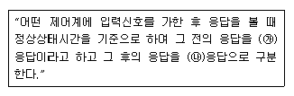
- ㉮시간 ㉯과도
- ㉮시간 ㉯선형
- ㉮과도 ㉯정상
- ㉮과도 ㉯시간
(정답률: 59%)
39. ¡=20√2sin(⍵t+10)+5√2sin(3⍵t-30)+3√2sin(5⍵t+90)[㎃]인 비정현파 전류의 실효값은 약 몇 [㎃]인가?
- 20.8[㎃]
- 28.1[㎃]
- 29.5[㎃]
- 39.6[㎃]
(정답률: 32%)
40. 다음 중 3상 권선형 유도정동기의 기동법에 속하는 것은?
- 콘도르 파 기동법
- Y-△ 기동법
- 2차저항 기동법
- 리액터 기동법
(정답률: 61%)
3과목: 소방관계법규
41. 다음 중 하자보수대상 소방시설 중 하자보수보증기간이 다른 것은?
- 유도표지
- 무선통신보조설비
- 비상경보설비
- 자동화재탐지설비
(정답률: 65%)
42. 소방자동차의 우선통행에 관한 사항으로 다음 중 옳지 않은 것은?
- 소방자동차가 화재진압 및 구조ㆍ구급활동을 위하여 출동할 때에는 사이렌을 사용할 수 있다.
- 소방자동차가 소방훈련을 위하여 필요한 때에는 사이렌을 사용할 수 있다.
- 소방자동차의 우선통행에 관하여는 소방방재청장이 정하는 바에 따른다.
- 모든 차와 사람은 소방자동차가 화재진압 및 구조ㆍ구급활동을 위하여 출동할 때에는 이를 방해하여서는 아니된다.
(정답률: 64%)
43. 탱크시험자가 등록취소 처분을 하고자 하는 경우에 청문실시권자가 아닌 것은?
- 시ㆍ도지사
- 소방서장
- 소방본부장
- 행정안전부장관
(정답률: 61%)
44. 신축ㆍ증축ㆍ개축ㆍ대수선 또는 용도변경으로 해당 특정 소방대상물의 방화관리자를 신규로 선임하는 경우 해당 특정소방대상물의 관계인은 특정소방대상물의 완공일로부터 며칠이내에 방화관리자를 선임하여야 하는가?
- 7일이내
- 14일이내
- 30일이내
- 60일이내
(정답률: 63%)
45. 위험물제조소등의 관계인이 화재 등 재해발생시의 비상조치를 위하여 정하여야 하는 예방규정에 관한 설명으로 바른 것은?
- 위험물안전관리자가 선임되지 아니하였을 경우에 정하여 시행 한다.
- 제조소등을 사용하기 시작한 후 30일 이내에 예방규정을 정하여 시행 한다.
- 예방규정을 정하여 한국소방안전협회의 검토를 받아 시행 한다.
- 예방규정을 정하고 당해 제조소등의 사용을 시작하기 전에 시ㆍ도지사에게 제출한다.
(정답률: 57%)
46. 인화성 액체인 제4류 위험물의 품명별 지정수량이다. 다음 중 옳지 않은 것은?
- 특수인화물 50리터
- 제1석유류 중 비수용성액체는 200리터, 수용성액체는 400리터
- 알코올류 300리터
- 제4석유류 6000리터
(정답률: 61%)
47. 터널을 제외한 지하가로서 연면적이 1500m2 인 경우 설치하지 않아도 되는 소방시설은?
- 비상방송설비
- 스프링클러설비
- 무선통신보조설비
- 제연설비
(정답률: 34%)
48. 방화관리업무를 수행하지 아니한 특정소방대상물의 관계인의 벌칙기준은?
- 200만원 이하의 과태료
- 100만원 이하의 벌금
- 500만원 이하의 과태료
- 300만원 이하의 벌금
(정답률: 48%)
49. 방화관리업무의 대행 또는 소방시설등의 점검 및 유지ㆍ관리의 업을 하고자 하는 자는 누구에게 등록하여야 하는가?
- 한국소방안전협회장
- 관할 소장서장
- 소방산업기술원장
- 시ㆍ도지사
(정답률: 65%)
50. 다음 중 소방기본법상의 벌칙으로 5년 이하의 징역 또는 3000만원 이하의 벌금에 해당되지 않는 것은?
- 소방자동차가 화재진압 및 구급활동을 위하여 출동하는 때에 그 출동을 방해한 자
- 사람을 구출하거나 불이 번지는 것을 막기 위하여 소방대상물 및 토지의 사용제한의 강제처분을 방해한 자
- 화재등 위급한 상황이 발생한 현장에서 사람을 구출하거나 불을 끄거나 불이 번지지 아니하도록 하는 일을 방해한 자
- 정당한 사유없이 소방용수시설의 효용을 해하거나 그 정당한 사용을 방해한 자
(정답률: 57%)
51. 특정소방대상물과 관령하여 다음 중 판매시설 및 영업시설에 포함되지 않는 것은?
- 공항시설
- 소매시장
- 주차장
- 화물터미널
(정답률: 52%)
52. 화재, 재난ㆍ재해 그밖의 위급한 상황이 발생한 현장에는 소방활동에 필요한 자로 그 구역에의 출입을 제한 할 수 있다. 다음 중 소방활동구역의 설정권자는?
- 소방방재청장
- 시ㆍ도지사
- 소방대장
- 시장, 군수
(정답률: 65%)
53. 소방용수시설의 급수탑의 설치기준에 관한 사항이다, 다음 중 개폐밸브의 설치위치로 알맞은 것은?
- 지상에서 0.5m 이상 1m 이하
- 지상에서 0.8m 이상 1.2m 이하
- 지상에서 1.0m 이상 1.5m 이하
- 지상에서 1.5m 이상 1.7m 이하
(정답률: 67%)
54. 소방본부장 도는 소방서장은 연면적 20000m2인 건축물의 건축허가등의 동의요구서를 접수한 날부터 며칠 이내에 건축허가 등의 동의여부를 회신하여야 하는가?
- 3일 이내
- 5일 이내
- 7일 이내
- 10일 이내
(정답률: 34%)
55. 다음은 소방시설공사업자의 시공능력평가액 산정을 위한 산식이다. ( )에 들어갈 내용으로 알맞은 것은?
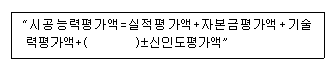
- 기술개발평가액
- 경력평가액
- 자본투자평가액
- 평균공사실적평가액
(정답률: 42%)
56. 연소할 우려가 있는 구조에 대한 설명으로 다음 (㉮), (㉯)에 들어갈 수치로 알맞은 것은?
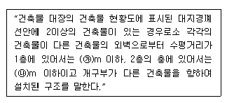
- ㉮5, ㉯10
- ㉮6, ㉯10
- ㉮10, ㉯5
- ㉮10, ㉯6
(정답률: 56%)
57. 다음은 소방기본법의 목적을 기술한 것이다. (㉮), (㉯), (㉰)에 들어갈 내용으로 알맞은 것은?
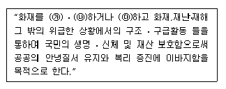
- (㉮)예방, (㉯)경계, (㉰)복구
- (㉮)경보, (㉯)소화, (㉰)복구
- (㉮)예방, (㉯)경계, (㉰)진압
- (㉮)경계, (㉯)통제, (㉰)진압
(정답률: 76%)
58. 소반기본법상 소방활동에 필요한 소화전ㆍ급수탑ㆍ저수조를 설치하고 유지ㆍ관리하여야 하는 자는?
- 관계인
- 소방대장
- 시ㆍ도지사
- 소방산업기술원장
(정답률: 72%)
59. 위험물 중 성질이 인화성 액체로서 기어유, 실린더유 그밖에 1기압에서 인화점이 200℃ 이상 250℃ 미만의 것은?
- 제2석유류
- 제2석유류
- 제3석유류
- 제4석유류
(정답률: 62%)
60. 소방시설공사업 등록신청시 제충하여야 할 자산평가액 또는 기업진단보고서는 신청일 전 최근 며칠 이내에 작성한것이여야 하는가?
- 90일
- 120일
- 150일
- 180일
(정답률: 68%)
4과목: 소방전기시설의 구조 및 원리
61. 자동화재탐지설비의 감지기의 구조 및 기능에 대한 설명으로 틀린 것은?
- 차동식분포형감지기는 그 기판면을 부착한 정 위치로부터 45도를 각각 경사시킨 경우 그 기능에 이상이 생기지 않아야 한다.
- 연기를 감지하는 감지기는 감시챔버로 1.3±0.⑤mm 크기의 물체가 침입할 수 없는 구조 이어야 한다.
- 방사선물질을 사용하는 감지기는 그 방사성물질을 밀봉선원으로 하여 외부에서 직접 접촉할 수 없도록 하여야 한다.
- 감지기가 작동한 경우 수신기에 그 감지기가 작동한 내용이 표시되는 감지기는 작동표시장치를 설치하지 아니할 수 있다.
(정답률: 61%)
62. 비상콘센트설비의 전원부와 외함사이의 절연저항은 500V 절연저항계로 측정하는 경우 몇 [MΩ] 이상이어야 하는가?
- 2[MΩ]
- 5[MΩ]
- 20[MΩ]
- 50[MΩ]
(정답률: 47%)
63. 사용전압이 600V 이하인 경계전로의 누설전류를 검출하여 당해 소방대상물의 관계자에게 경보를 발하여주는 설비로서 변류기와 수신부로 구성된 것은?
- 비상경보설비
- 누전경보기
- 전기화재경보기
- 전기누설탐지기
(정답률: 68%)
64. 무선통신보조설비의 증폭기 전면에 주회로의 전원이 정상인지의 여부를 표시할 수 있도록 설치하는 것으로 옳게 나열된 것은?
- 전력계, 전류계
- 전류계, 전압계
- 표시등, 전압계
- 표시등, 전력계
(정답률: 77%)
65. 일반전기사업자로부터 특별고압 또는 고압으로 수전하는 비상전원 수전설비의 경우에 있어 소방회로배선과 일반회로 배선을 몇[cm] 이상 떨어져 설치하는 경우 불연성 벽으로 구획하지 않을 수 있는가?
- 5[cm]
- 10[cm]
- 15[cm]
- 20[cm]
(정답률: 61%)
66. 비산콘센트설비의 전원회로에 대한 설치기준으로 틀린 것은?(문제오류로 관련 규정이 변경되어 정답이 업습니다. 여기서는 기존 정답 2번을 누르면 정답 처리 됩니다. 자세한 내용은 해설을 참고하세요.)
- 지하층을 포함한 11층 이상의 각 층마다 설치할 것
- 개폐기에는 “소방용” 이라고 표시한 표지를 할 것
- 3상 교류 380V인 것의 공급용량응 2kVA 이상일 것
- 전원으로부터 각층의 비상콘센트에 분기되는 경우에는 분기배선용 차단기를 보호함안에 설치할 것
(정답률: 69%)
67. 지하 4층, 지상 5층으로 연면적이 3500m2인 소방대상물에 비상방송설비를 설치하였다. 지하 3층에서 발화한 경우 우선적으로 경보를 하여야 할 층은?
- 지하 2층ㆍ지하 3층
- 지하 1층ㆍ지하 2층ㆍ지하 3층
- 지하 1층ㆍ지하 2층ㆍ지하 3층ㆍ지하 4층
- 지하 1층ㆍ지하 2층ㆍ지하 3층ㆍ지하 4층, 지상 1층
(정답률: 62%)
68. 어느 공연장에 객석유도등을 설치하려고 한다. 객석통로의 직선부분의 길이가 37m일 때 객석유도등의 설치 개수로 알맞은 것은?
- 4개
- 8개
- 9개
- 10개
(정답률: 69%)
69. 정온식감지선형감지기의 설치기준으로 틀린 것은?
- 단자부와 마감 고정금구와의 설치간격은 10cm 이상으로 설치할 것
- 감지선형 감지기의 굴곡반경은 5cm 이상으로 할 것
- 지하구나 창고의 천장 등에 지지물이 적당하지 않는 장소에서는 보조선을 설치하고 그 보조선에설치할 것
- 케이블 트레이에 감지기를 설치하는 경우 케이블트레이 받침대에 마감 금구를 사용하여 설치할 것
(정답률: 40%)
70. 휴대용비상조명등에 대한 기준을 설명한 것으로 틀린 것은?
- 어둠속에서 위치를 확인할 수 잇을 것
- 사용시 자동으로 점등되는 구조 일 것
- 외함은 난연성능이 있을 것
- 전원으로 충전식 배터리 이외 건전지를 사용하지 말 것
(정답률: 69%)
71. 자동화재탐지설비의 화재안전기준에서 사용하는 용어의 정의로 틀린 것은?
- 발신기라 함은 화재발생 신호를 수신기에 자동으로 발신하는 것을 말한다.
- 경계구역이라 함은 소방대상물 중 화재신호를 발신하고 그 신호를 수신 및 유효하게 제어할 수 있는 구역을 말한다.
- 거실이라 함은 거주ㆍ집무ㆍ작업ㆍ집회ㆍ오락 그밖에 이와 유사한 목적을 위하여 사용하는 방을 말한다.
- 중계기라 함은 감지기ㆍ발신기 또는 전기적 접점 등의 작동에 따른 신호를 받아 이를 수신기의 제어반에 전송하는 장치를 말한다.
(정답률: 61%)
72. 비상조명등에 사용하는 광원으로 비상전원에 의하여 점등되는 백열전구의 설치기준으로 옳은 것은?
- 백열전구는 2개 이상 직렬로 설치
- 백열전구는 2개 이상 병렬로 설치
- 백열전구는 3개 이상 직렬 및 병렬로 설치
- 백열전구는 4개 이상 직렬 및 병렬로 설치
(정답률: 68%)
73. 발신기의 위치를 표시하는 표시등으로 알맞은 것은?
- 황색등
- 적색등
- 청색등
- 황색 점멸등
(정답률: 69%)
74. 축광식 위치표지는 주위 조도 0룩스에서 60분간 발광 후 직선거리 몇 [m] 떨어진 위치에서 보통시력으로 표시면의 문자 또는 화살표 등을 쉽게 식별할 수 있는 것으로 하여야 하는가?
- 1[m]
- 3[m]
- 5[m]
- 10[m]
(정답률: 63%)
75. 자동화재속보설비의 속보기 기능에 대한 설명으로 틀린 것은?
- 자동 또는 수동으로 소방관서에 속보하는 경우 송수화기로 직접 통보할 수 있어야 한다.
- 주전원이 정지한 후 정상상태로 복귀한 경우에는 화재표시 및 경보는 자동으로 복구 되어야 한다.
- 자동화재탐지설비로부터 화재신호를 수신하는 경우 자동적으로 적색 화재표시등이 점등되고 음향장치로 화재를 경보하여야 한다.
- 수동으로 동작시키는 경우 20초 이내에 소방관서에 자동적으로 신호를 발하여 통보하되, 3회 이상 속보 할 수 있어야 한다.
(정답률: 61%)
76. 누전경보기에 대한 설명으로 틀린 것은?
- 누전화재의 발생을 표시하는 표시등은 적색으로 표시되어야 한다.
- 감도조정장치를 갖는 누전경보기의 감도조정장피의 조정범의는 최대치가 1A 이어야 한다.
- 누전경보기의 공칭작동전류치는 200mA 이하 이어야 한다.
- 정격전압이 50V를 넘은 기구의 급속제 외함에는 접지단자를 설치하여야 한다.
(정답률: 67%)
77. 단독경보형 감지기의 일반기능에 대한 설명으로 틀린 것은?(관련 규정 개정전 문제로 여기서는 기존 정답인 1번을 누르면 정답 처리됩니다. 자세한 내용은 해설을 참고하세요.)
- 자동복귀형 스위치에 의하여 자동으로 작동시험을 할 수 있는 기능이 있어야 한다.
- 전원의 정상상태를 표시하는 전원표시등의 성광주기는 1초 이내의 점등과 30초에서 60초이내의 소등으로 이루 어져야 한다.
- 작동되는 경우 작동표시등의 점등에 의하여 화재를 표시하고, 내장된 음향장치의 명동에 의하여 화재경보음을 발할 수 있는 기능이 있어야 한다.
- 건전지의 성능이 저하된 경우에는 음향이나 광원에 의하여 48시간 이상 계속하여 그 경보 또는 표시를 할 수 있어야 한다.
(정답률: 42%)
78. 비상방송설비는 기동장치에 따른 화재신고를 수신한 후 필요한 음량으로 화재발생 상황 및 피난에 유효한 방송이 자동으로 개시될 때가지의 소요시간은 몇 초 이하로 하여야 하는가?
- 5초
- 10초
- 20초
- 30초
(정답률: 75%)
79. 증폭기의 비상전원 용량은 무선통신보조설비를 유효하게 몇 분 이상 작동시킬 수 있는 것으로 하여야 하는가?
- 10분
- 30분
- 20초
- 30초
(정답률: 72%)
80. 유도등의 전원 및 배선 기준 중 틀린 것은?
- 비상전원은 축전지로 할 것
- 유도등의 전기회로에는 점멸기를 설치하고 항상 점등상태를 유지할 것
- 유도등의 인입선과 옥내배성은 직접 연결할 것
- 유도등의 전원은 축전지 또는 교류전압의 옥내간선으로 하고, 전원까지의 배선은 전용으로 할 것
(정답률: 45%)
설명: 자연발화란 물질이 스스로 불을 일으키는 것을 말하는데, 이를 일으키기 위해서는 물질 내부의 열이 충분히 모여야 합니다. 따라서 열전도율이 클수록 열이 빠르게 전달되어 물질 내부의 열이 모이기 어렵습니다. 따라서 열전도율이 클 경우 자연발화가 일어나기 어렵습니다. 반면, 적당량의 수분이 존재하고 주위의 온도가 높으며 포면적이 넓을수록 자연발화가 일어날 가능성이 높아집니다.